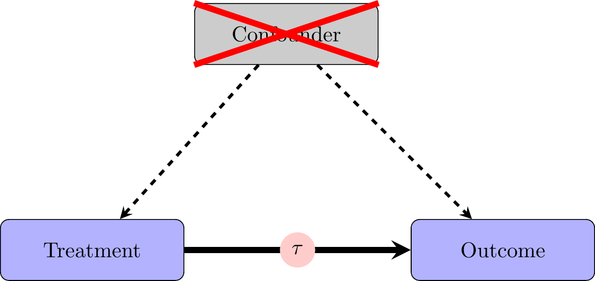
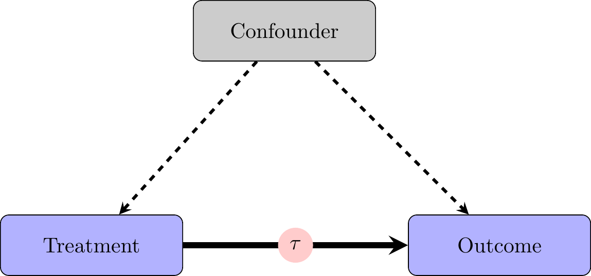
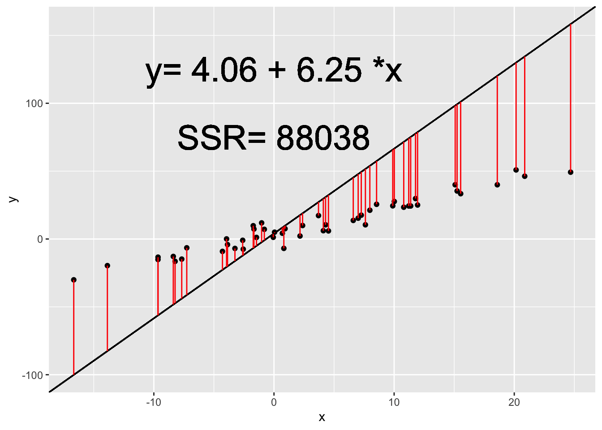
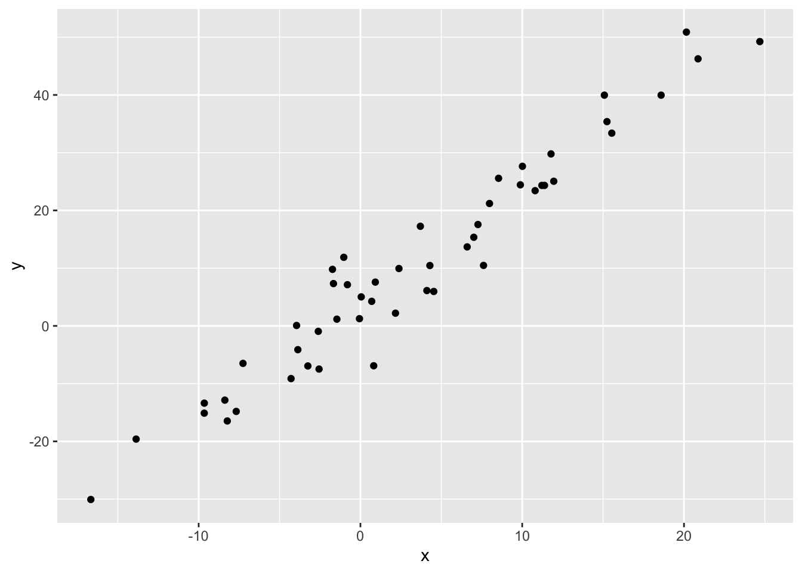
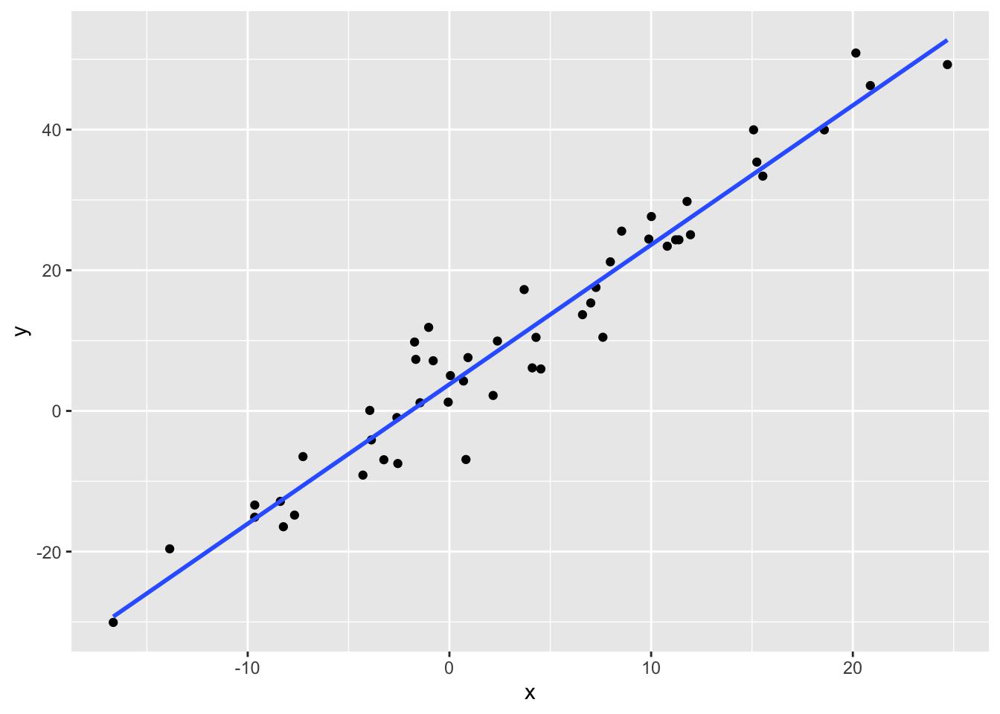

Section 8. Regression
New Package for Today
install.packages("stargazer")library(stargazer)Introduction to Linear Regression
A Refresher on Causality and Experiments

When we are in the world of experiments, the relationships in our data look like this. Because of random assignment, there are no differences between “treatment” and “control” groups on average. This means that any differences in the outcome variable should be attributable to the experimental treatment.
Observational Data
In the world of observational data (which all of us are for our final projects), we have to worry about the “treatment” and “control” groups being different. For example, if we want to study the effects of war on certain political outcomes, we have to worry about countries that go to war being systematically different from countries that do not go to war. In other words, in the real world, people or objects of study select into treatment. People choose to watch Fox News; they choose to get vaccinated; state lawmaking bodies choose to adopt policies.
The reasons that people or lawmaking bodies have for selecting some “treatment” we are interested in often have the potential to shape the outcomes we are interested in too. These causal relationships that lead to people taking a “treatment” and also people having certain outcomes mean we cannot identify the effect of our treatment on the outcome without accounting for the underlying variable that causes both “treatment” and outcome. This underlying variable causing both treatment and outcome is called a “confounder”. Thus, what we observe is:

Regression gives us a framework to account for these confounding variables and to better approximate the experimental ideal. It is important to note that we cannot ever be sure that we have accounted for all potential confounding variables, however. This is why experiments are the “gold standard” for identifying causal effects.
That said, sometimes it is impossible, infeasible, or unethical to conduct experiments, so observational data are the best available way to test our hypotheses. In these settings, it is crucial to think carefully about potential confounding variables which could cause “treated” units to systematically differ from “untreated” units.
Bivariate Regression
Starting with a single variable, we have a formula of the form:
\[y_i = \beta_0 + \beta_1 * x_i + \varepsilon_i\] We fit our Y or outcome variable to a line with slope \(\beta_1\) and y-intercept \(\beta_0\). The \(\varepsilon\) captures “error” which is not explained by our model. We estimate \(\beta_0\) and \(\beta_1\) using Ordinary Least Squares (OLS) or Linear Regression.
Ordinary Least Squares finds the values of \(\beta_0\) and \(\beta_1\) which minimize the sum of squared residuals. Residuals are the difference between our actual, observed Y values and the predicted Y values using \(\beta_0\) and \(\beta_1\).
The sum of squared residuals (SSR) is calculated as:
\[SSR = \sum_{i =1}^n (y_i - \beta_0 - \beta_1 * x_i)^2\]
In the animation below, we can see how the OLS coefficient estimates (displayed on the last frame) minimize the Sum of Squared Residuals.

The Meaning of Regression Estimates
After estimating the coefficients for the line that minimizes the sum of squared residuals, we want to interpret these coefficient estimates.
| Coefficient | Name | Meaning |
|---|---|---|
| \(\beta_0\) | Intercept | Predicted value of \(y_i\) when \(x_i = 0\) |
| \(\beta_1\) | Coefficient Estimate/Slope | Predicted increase in \(y_i\) corresponding to an increase of 1 in \(x_i\) |
Interpreting Regression Estimates
Note: when we are working with observational data, we usually cannot definitively say that X causes Y because we cannot be sure that we have accurately and fully accounted for all confounding variables. As a result, we generally try not to say that \(\beta_1\) is the estimate of the effect of X on Y, or that X leads to or causes Y.
Instead, we usually interpret our regression coefficients using some variation of the following:
An increase of 1 in X is associated with an increase/decrease/change of \(\beta_1\) in Y.
If X increases by 1, Y is expected to increase/decrease by \(\beta_1\).
If X increases by 1, Y is predicted to increase/decrease by \(\beta_1\).
Fitting a Bivariate Regression in R
To fit regressions in R, we usually use the lm() command. The main arguments we need to worry about are the formula and the data. The formula is of the form DV~IV where the DV is your dependent variable and the IV is your independent or predictor variables. The lm() command adds an intercept automatically, so you don’t have to worry about specifying this.
reg_data <- read_csv("section-8/regression_data.csv")
reg_data %>%
ggplot(aes(x, y)) +
geom_point() 
mod <- lm(y~x, data = reg_data)
summary(mod)
Call:
lm(formula = y ~ x, data = reg_data)
Residuals:
Min 1Q Median 3Q Max
-12.3222 -2.4311 -0.1352 2.4702 10.1279
Coefficients:
Estimate Std. Error t value Pr(>|t|)
(Intercept) 3.79069 0.68815 5.509 1.4e-06 ***
x 1.98246 0.07053 28.107 < 2e-16 ***
---
Signif. codes: 0 '***' 0.001 '**' 0.01 '*' 0.05 '.' 0.1 ' ' 1
Residual standard error: 4.571 on 48 degrees of freedom
Multiple R-squared: 0.9427, Adjusted R-squared: 0.9415
F-statistic: 790 on 1 and 48 DF, p-value: < 2.2e-16The lm() function gives us a lot of useful information. It gives us summary statistics for Residuals at the top. It gives us estimates of our coefficients \(\beta_0\) and \(\beta_1\) as well as standard errors, t-values, and p-values. The p-values tell us the probability of observing a coefficient estimate at least as large as the one we actually observe if the null hypothesis that the coefficient estimate is 0 is true. Finally, we get a variety of measures of model fit and statistics for the model.
1. How would we interpret the intercept estimate of our model?
1. How would we interpret the intercept estimate of our model?
When x is 0, the expected value of y is about 3.8.
2. How would we interpret the coefficient estimate for x in our model?
2. How would we interpret the coefficient estimate for x in our model?
As x increases by 1, we would expect y to increase by about 2.
Producing a Nice Regression Table: stargazer()
stargazer(mod, type = 'text')
===============================================
Dependent variable:
---------------------------
y
-----------------------------------------------
x 1.982***
(0.071)
Constant 3.791***
(0.688)
-----------------------------------------------
Observations 50
R2 0.943
Adjusted R2 0.942
Residual Std. Error 4.571 (df = 48)
F Statistic 790.029*** (df = 1; 48)
===============================================
Note: *p<0.1; **p<0.05; ***p<0.01stargazer(mod,
type = 'text', # specifying type = "text" can help when trying to format the table, but generally we want to use type = "html"
title = "Title", # this sets the title of the table
omit.stat = c( "f", "ser"),# this helps omit unnecessary statistics, including the F-Statistic and the Standard Error of the Regression
covariate.labels = c("Covariate 1", "Intercept"), #sets the labels of the coefficient estimates (x, intercept)
column.labels = c("Dependent Variable 1"), #this sets the labels of the columns
dep.var.caption = "Dependent Var", #this sets a caption for the dependent variable
dep.var.labels = c("Y")) #this is useful if you are using multiple different dependent variables across multiple models
Title
========================================
Dependent Var
---------------------------
Y
Dependent Variable 1
----------------------------------------
Covariate 1 1.982***
(0.071)
Intercept 3.791***
(0.688)
----------------------------------------
Observations 50
R2 0.943
Adjusted R2 0.942
========================================
Note: *p<0.1; **p<0.05; ***p<0.01Visualizing a Bivariate Regression in ggplot2
ggplot2 gives us a nice function for drawing a regression line for our data. The function is geom_smooth().
reg_data %>%
ggplot(aes(x, y)) +
geom_point() +
geom_smooth(method = "lm", se = F)`geom_smooth()` using formula = 'y ~ x'
With the method argument, we are telling ggplot to add a line from a linear model to our plot. The se = F argument tells ggplot not to plot the standard error of the regression line.
Multiple Linear Regression
As noted above, when we are working with observational data, we want to account for potential confounding variables that affect both one’s probability of getting a treatment and one’s outcome variable. We can do this by simply adding potential confounding variables to the formula.
Instead of estimating the bivariate regression (\(y_i = \beta_0 + \beta_1*x_i + \varepsilon_i\)), we estimate:
\[y_i = \beta_0 + \beta_1*x_1i + \beta_2*x_2i + ... + \beta_k*x_ki + \varepsilon_i\]
Without adding the confounding variables to our regression equation, our estimates of the coefficients will be biased. This is known as Omitted Variables Bias.
Let’s take a look at an example of confounding and how that affects our regression results.
These are fake data that come from a true model of \(y_i = 4+2*x_i+5*confound_i + var1_i + \varepsilon_i\) and \(x_i = 2 + 2*confound_i + \gamma_i\).
confound <- read_csv("section-8/confound.csv")
mod1 <- lm(y~x, data = confound)
summary(mod1)
Call:
lm(formula = y ~ x, data = confound)
Residuals:
Min 1Q Median 3Q Max
-57.504 -10.331 -0.022 10.279 59.043
Coefficients:
Estimate Std. Error t value Pr(>|t|)
(Intercept) 0.096617 0.319234 0.303 0.762
x 4.486664 0.002678 1675.107 <2e-16 ***
---
Signif. codes: 0 '***' 0.001 '**' 0.01 '*' 0.05 '.' 0.1 ' ' 1
Residual standard error: 15.38 on 9998 degrees of freedom
Multiple R-squared: 0.9964, Adjusted R-squared: 0.9964
F-statistic: 2.806e+06 on 1 and 9998 DF, p-value: < 2.2e-16Without accounting for the confounding variable, we get a coefficient estimate for \(\beta_1\) of about 4.5 (remember the true coefficient for x is 2). What happens if we include the confounding variable in our regression model?
mod2 <- lm(y~x+confound, data = confound)
summary(mod2)
Call:
lm(formula = y ~ x + confound, data = confound)
Residuals:
Min 1Q Median 3Q Max
-42.504 -7.997 -0.068 7.745 44.821
Coefficients:
Estimate Std. Error t value Pr(>|t|)
(Intercept) 11.29233 0.27590 40.93 <2e-16 ***
x 2.00932 0.02908 69.09 <2e-16 ***
confound 4.97505 0.05826 85.39 <2e-16 ***
---
Signif. codes: 0 '***' 0.001 '**' 0.01 '*' 0.05 '.' 0.1 ' ' 1
Residual standard error: 11.7 on 9997 degrees of freedom
Multiple R-squared: 0.9979, Adjusted R-squared: 0.9979
F-statistic: 2.43e+06 on 2 and 9997 DF, p-value: < 2.2e-16If we include the confounding variable in our model as a “control” variable, our estimate of the coefficient estimate for x decreases to about 2–an unbiased estimate of the true value (2).
Finally, because \(var1\) does not affect both x and y, its exclusion from our regression model does not bias our results.
mod3 <- lm(y~x+confound+var1, data = confound)stargazer(mod1, mod2, mod3, type = "html",
omit.stat = c("ser", "f"))| Dependent variable: | |||
| y | |||
| (1) | (2) | (3) | |
| x | 4.487*** | 2.009*** | 1.981*** |
| (0.003) | (0.029) | (0.015) | |
| confound | 4.975*** | 5.036*** | |
| (0.058) | (0.030) | ||
| var1 | 1.004*** | ||
| (0.006) | |||
| Constant | 0.097 | 11.292*** | 4.181*** |
| (0.319) | (0.276) | (0.147) | |
| Observations | 10,000 | 10,000 | 10,000 |
| R2 | 0.996 | 0.998 | 0.999 |
| Adjusted R2 | 0.996 | 0.998 | 0.999 |
| Note: | p<0.1; p<0.05; p<0.01 | ||
Example with House Data
Let’s do a full analysis with our House data. Let’s say we want to test the hypothesis that campaign spending leads to a better electoral performance. We can fit a simple regression of voteshare on logged campaign spending.
house <- read_csv("house2020_elections.csv")
mod1_house <- lm(voteshare~log(disbursements), data = house)
summary(mod1_house)
Call:
lm(formula = voteshare ~ log(disbursements), data = house)
Residuals:
Min 1Q Median 3Q Max
-41.22 -10.82 -2.74 10.53 50.93
Coefficients:
Estimate Std. Error t value Pr(>|t|)
(Intercept) -17.1821 4.6197 -3.719 0.000215 ***
log(disbursements) 5.0385 0.3381 14.902 < 2e-16 ***
---
Signif. codes: 0 '***' 0.001 '**' 0.01 '*' 0.05 '.' 0.1 ' ' 1
Residual standard error: 15.03 on 724 degrees of freedom
Multiple R-squared: 0.2347, Adjusted R-squared: 0.2337
F-statistic: 222.1 on 1 and 724 DF, p-value: < 2.2e-16This is interesting by itself; however, there is good reason to believe there are some omitted variables here. Specifically, we might think that certain types of candidates are likely to both raise a lot of money and perform well electorally. This would make it appear that the spending is leading to the voteshare, when really it is the confounding variable that is generating this relationship. One such confounding variable is incumbency.
We can account for incumbency status by adding it into our regression.
mod2_house <- lm(voteshare~log(disbursements)+incumbent_challenge_full, data = house)
summary(mod2_house)
Call:
lm(formula = voteshare ~ log(disbursements) + incumbent_challenge_full,
data = house)
Residuals:
Min 1Q Median 3Q Max
-41.400 -6.307 0.487 5.538 47.319
Coefficients:
Estimate Std. Error t value Pr(>|t|)
(Intercept) 13.2845 3.7549 3.538 0.000429 ***
log(disbursements) 1.9156 0.2915 6.572 9.51e-11 ***
incumbent_challenge_fullIncumbent 23.0113 1.0141 22.691 < 2e-16 ***
incumbent_challenge_fullOpen seat 6.7225 1.5444 4.353 1.54e-05 ***
---
Signif. codes: 0 '***' 0.001 '**' 0.01 '*' 0.05 '.' 0.1 ' ' 1
Residual standard error: 11.43 on 722 degrees of freedom
Multiple R-squared: 0.5586, Adjusted R-squared: 0.5568
F-statistic: 304.6 on 3 and 722 DF, p-value: < 2.2e-16Indeed, we can see that our intuitions about incumbency status were likely pretty good: the coefficient estimate for campaign spending decreased by a lot once we include incumbency status.
The election in 2020 was a fairly good one for Republican House candidates, so we might think that party is also an important potential confounder: Republicans might have been both able to raise more money and performed better in the election.
mod3_house <- lm(voteshare~log(disbursements)+incumbent_challenge_full + party, data = house)
summary(mod3_house)
Call:
lm(formula = voteshare ~ log(disbursements) + incumbent_challenge_full +
party, data = house)
Residuals:
Min 1Q Median 3Q Max
-42.740 -6.081 0.432 5.247 48.549
Coefficients:
Estimate Std. Error t value Pr(>|t|)
(Intercept) 11.7844 3.7772 3.120 0.00188 **
log(disbursements) 1.9367 0.2903 6.672 5.02e-11 ***
incumbent_challenge_fullIncumbent 23.1739 1.0112 22.917 < 2e-16 ***
incumbent_challenge_fullOpen seat 6.8515 1.5381 4.455 9.74e-06 ***
partyREP 2.3409 0.8482 2.760 0.00593 **
---
Signif. codes: 0 '***' 0.001 '**' 0.01 '*' 0.05 '.' 0.1 ' ' 1
Residual standard error: 11.38 on 721 degrees of freedom
Multiple R-squared: 0.5632, Adjusted R-squared: 0.5608
F-statistic: 232.4 on 4 and 721 DF, p-value: < 2.2e-16It does not appear that party was a big confounding variable (the coefficient estimate for spending didn’t change much after we included party). That said, we do see that Republican candidates did perform better electorally than Democratic candidates in 2020.
Finally, let’s put all of these regression models together:
stargazer(mod1_house, mod2_house, mod3_house, type = "html",
omit.stat = c("ser", "f"),
covariate.labels = c("log(Spending)", "Incumbent", "Open-Seat", "Republican", "Intercept"),
dep.var.labels = c("Vote Share"))| Dependent variable: | |||
| Vote Share | |||
| (1) | (2) | (3) | |
| log(Spending) | 5.038*** | 1.916*** | 1.937*** |
| (0.338) | (0.291) | (0.290) | |
| Incumbent | 23.011*** | 23.174*** | |
| (1.014) | (1.011) | ||
| Open-Seat | 6.722*** | 6.852*** | |
| (1.544) | (1.538) | ||
| Republican | 2.341*** | ||
| (0.848) | |||
| Intercept | -17.182*** | 13.284*** | 11.784*** |
| (4.620) | (3.755) | (3.777) | |
| Observations | 726 | 726 | 726 |
| R2 | 0.235 | 0.559 | 0.563 |
| Adjusted R2 | 0.234 | 0.557 | 0.561 |
| Note: | p<0.1; p<0.05; p<0.01 | ||
Weighted Linear Regression
The last thing to note is that when we are using data with weights, we want to conduct weighted regressions. We can do this using the weights argument in the lm() function.
For example, if we go back to the CES dataset we worked with last section:
ces <- read_csv("ces2020_example.csv")|>
filter(ideo5%in%1:5&pid3%in%1:3)
mod1_ces <- lm(ideo5~factor(pid3), data = ces)
mod2_ces <- lm(ideo5~factor(pid3), data = ces, weights = commonweight)
stargazer(mod1_ces, mod2_ces, type = "html",
omit.stat = c("f", "ser"),
column.labels = c("Unweighted", "Weighted"),
dep.var.labels = c("Vote Share"))| Dependent variable: | ||
| Vote Share | ||
| Unweighted | Weighted | |
| (1) | (2) | |
| factor(pid3)2 | 2.005*** | 2.098*** |
| (0.074) | (0.073) | |
| factor(pid3)3 | 0.935*** | 1.114*** |
| (0.073) | (0.078) | |
| Constant | 2.146*** | 2.149*** |
| (0.047) | (0.051) | |
| Observations | 874 | 874 |
| R2 | 0.457 | 0.490 |
| Adjusted R2 | 0.456 | 0.489 |
| Note: | p<0.1; p<0.05; p<0.01 | |